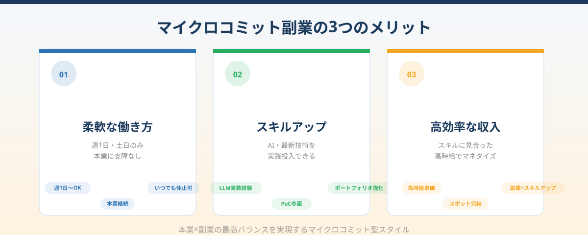
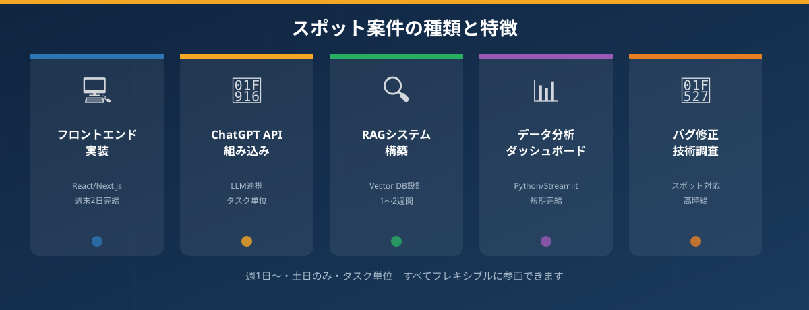

本業は辞めたくない。でも週末の時間を「収入とスキル」に変えたい
大手IT企業やメガベンチャーで働くエンジニアの多くが、このような矛盾する気持ちを抱えています。本業は安定しているし、福利厚生も充実している。辞めたいわけじゃない。でも、土日にぼんやり過ごすのももったいない。最新のAI技術を使ったプロジェクトに携わりながら、副収入も得られたら一番いい——。
特にここ数年で生成AIが急速に実用化され、「LLMを使いたい」「RAGを設計してみたい」というエンジニアの知的好奇心は高まるばかりです。本業では既存システムの保守や決まったスタックでの開発が多く、最新技術を実践する機会がなかなか得られないという不満を持つ方も多いのではないでしょうか。
副業でAI開発の実案件を経験することは、単なる収入源を超えた意味を持ちます。ポートフォリオが充実し、履歴書に書ける実績が増え、将来の選択肢が広がります。
従来の副業エージェントが合わない理由｜週20時間前提・長期拘束の現実
副業を始めようと大手の副業・フリーランスエージェントに登録してみたものの、「これじゃ本業との両立は無理だ」と感じて挫折した経験はないでしょうか。その感覚は正しいかもしれません。
多くの副業エージェントが紹介する案件は、週20〜40時間の稼働を前提にした設計になっています。これは事実上のセミフルタイムであり、メガベンチャーで本業をフルコミットしているエンジニアには、物理的にも精神的にも無理があります。
また、案件の多くが3か月〜半年以上の長期プロジェクトを前提としています。途中で辞めるのが申し訳ない、プロジェクトの都合に合わせなければならないというプレッシャーが、副業の心理的ハードルを上げてしまいます。「気軽に始めて、合わなかったらやめる」という感覚で参加しづらい構造になっているのです。
さらに、案件の技術レベルが低く「本業でやっていることの方がはるかに高度」という場合も少なくありません。これでは「副業でスキルアップしたい」という目的は果たせません。
- 週20〜40時間の稼働を前提にした案件が多い
- 3か月〜半年以上の長期コミットが基本で、途中離脱しにくい
- 技術レベルが低く、スキルアップにつながらない案件が多い
- 本業の繁忙期に「今月は休みたい」が言いづらい
マイクロコミットという新しい副業スタイル

ANKENが提供するマイクロコミット型の副業スタイルは、上記の「合わなさ」を根本から解決するアプローチです。
「マイクロコミット」とは、週1日・土日のみ・平日夜のみ・特定タスク完了まで、といった細かい粒度での参画スタイルのことです。従来のフリーランス・副業と異なり、長期コミットは求められません。自分のカレンダーに合わせて、オンとオフを自由に切り替えることができます。
副業OK・副業推進を明示しているメガベンチャー在籍の方はもちろん、就業規則の範囲内で副業を行いたい方にも、週数時間から始められるこのスタイルは非常に相性が良いといえます。
メリット①｜本業に支障をきたさない「週1日から」の柔軟な働き方
ANKENのスポット案件は、週1日・土日のみ・タスク単位での参画が可能です。「今週は忙しいのでスキップしたい」「来月から本格的に動きたい」という柔軟な調整も受け入れられる仕組みです。
本業の繁忙期はいったん休止して、落ち着いた時期に再開する——そういった使い方ができることで、副業がストレスの源になるリスクを大幅に下げることができます。「副業＝もう一つのフルタイム仕事」ではなく「スキルと時間を活かした副収入」として、長く続けられる設計です。
メリット②｜AI・最新技術を実践投入してスキルアップできる
ANKENに登録されているスポット案件の多くは、LLM活用・RAG設計・生成AIの組み込みといった最新技術を扱うものです。本業では触れにくい技術スタックを、実際のプロダクトに組み込む経験を通して習得できます。
これはドキュメントを読むだけの自己学習とは次元の違う経験です。実際のユーザーが使うプロダクトに貢献した実績は、ポートフォリオとして具体的に示すことができ、将来のキャリアにも直結します。「学びながら稼ぐ」を同時に実現できるのが、AI案件スポット参画の最大の魅力です。
メリット③｜スキルに見合った単価で最高効率でマネタイズ
フルスタックやAI領域のスキルを持つエンジニアがスポット案件に参画する場合、時給換算での単価は高水準になります。少ない稼働時間でも、スキルに見合った報酬を得ることができるのが、副業市場におけるハイスキルエンジニアの強みです。
週2日（土日）の稼働だけで、月に数万円〜十数万円の副収入を得るケースも珍しくありません。フルタイムの副業ではなく、スポット参画という形でも、技術力に応じた対価を得られる環境がANKENにはあります。
どんな案件があるの？実際のスポット案件の種類と特徴

「自分のスキルセットに合う案件があるか？」という疑問に答えるため、ANKENで多く取り扱われる案件の種類をご紹介します。
デザインカンプからの実装、既存コンポーネントへの機能追加、レスポンシブ対応など。週末2日のスポット案件として最も取り扱いが多いカテゴリの一つです。React・Next.js・TypeScriptのスキルがある方に最適です。
OpenAI APIやAnthropic APIを使ったテキスト生成・要約・分類機能の実装。PythonまたはNode.jsでのAPI連携から、シンプルなUIまで含めたタスク単位の案件です。LLMのAPI連携経験がある方に向いています。
社内ドキュメントの検索・質問応答システムの構築。ベクトルDBへの文書格納、embedding処理、LLMとの連携まで一気通貫で対応できる方へのスポット案件です。1〜2週間の短期稼働で求められるケースが多いです。
PandasやPolarsを使ったデータ処理、StreamlitやGrafanaを使ったダッシュボード構築。BI担当やマーケターが自走できるツールを作るタスク単位の案件。Pythonに習熟したエンジニアに最適です。
特定のバグの原因調査と修正、新技術導入前の検証、技術選定レポートの作成など。エンジニアとしての経験値が活きる、短時間・高単価なタスク型案件です。特定の深い専門知識を持つエンジニアに向いています。
まとめ
「本業は続けながら、最新技術を実践して副収入を得たい」というメガベンチャーエンジニアの理想は、マイクロコミット型の副業スタイルによって、今まさに実現できる環境が整ってきています。
週1日・土日だけ・タスク単位という柔軟な参画方法は、本業との両立を可能にするだけでなく、「副業疲れ」を防ぎ、長期的に続けられる仕組みを作ります。AI・最新技術を扱う案件への参画は、収入とスキルとポートフォリオの三つを同時に手に入れる手段です。
まずは登録するだけでOKです。実際にどんな案件があるか確認してみてください。動ける時期が来たら案件に手を上げる、動けない時期はスキップする——それでいいのがANKENのマイクロコミット型副業です。
週1日・タスク単位から参画できるAI・フルスタック案件を多数掲載中。登録は無料・1分で完了します。まず案件を見てみるだけでもOKです。
👉 無料でエンジニア登録する（1分）副業解禁企業在籍の方・フリーランスの方・どなたでも登録できます。